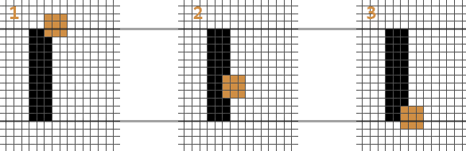
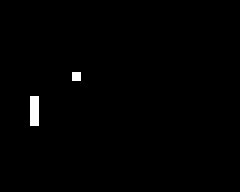
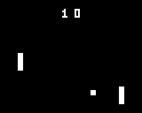

Pong
Étape 3
Le célèbre jeux où vous tapez dans la balle avec une raquette. Dans cette tape nous allons aborder:
-
Les collisions avancées
-
Une révision de tout ce que vous venez d'apprendre pour pogrammer un Pong à 2 joueurs.
Défiez vos amis avec un jeu 2 joueurs. Vous allez construire avec tout ce qu'on a vu jusqu'à présent, et approfondir vos connaissances sur les conditions if.
Pong, un grand classique du jeu vidéo
Durée 30-40 minutes (et plus si affinité)
Prérequis
- Avoir une Gamebuino META
- Avoir effectué l' Installation de la Gamebuino META
- Avoir fait les premières étapes de cet atelier hello, world, compteur d'invités et balle rebondissante
Pong était un des premiers jeux vidéo d'arcade en 1972, et a connu un énorme succès. Ce classique du jeu vidéo reste à la fois amusant et suffisamment simple pour apprendre à coder.
Dans cette étape, nous allons recréer ce classique nous aussi. Pour y parvenir, on va devoir utiliser ce que l'on a vu avec la balle dans l'atelier balle rebondissante et se baser sur ce qu'on a fait dans lecompteur d'invités pour faire bouger les raquettes. Mais commençons d'abord avec une analyse plus détaillée du jeu.
La décomposition du jeu
J'ai décomposé le jeu en plusieurs parties. Cela nous permettra de nous concentrer sur une seule tâche à la fois. De plus, essayer de comprendre comment un jeu est programmé en regardant son ensemble peut-être intimidant. En le décomposant, on voit qu'en réalité le jeu est composé de plusieurs parties simples.
- Créer la balle et la raquette
- Afficher la balle et la raquette
- Mettre à jour la position de la raquette
- Mettre à jour la position de la balle
- Vérifier les collisions entre la balle et les murs
- Vérifier les collisions entre la balle et la raquette
- Vérifier si la partie n'est pas perdue
- Ajouter un second joueur
- Compter et afficher les scores
On commencera donc par créer un Pong à un joueur. Une fois que ce sera fonctionnel, ajouter un autre joueur sera très simple.
Implémenter la balle et la raquette
#include <Gamebuino-Meta.h>
// Caractéristiques de la balle
int balle_posX = 20;
int balle_posY = 20;
int balle_speedX = 1;
int balle_speedY = 1;
int balle_taille = 4;
// Caractéristiques de la raquette
int raquette1_posX = 10;
int raquette1_posY = 30;
// Dimensions de la raquette
int raquette_hauteur = 12;
int raquette_largeur = 3;
void setup() {
gb.begin();
}
void loop() {
while (!gb.update());
gb.display.clear();
}
Ici on a créé nos deux objets : la balle et la première raquette. La balle a une position horizontale (X) et une position verticale (Y). Pour chaque axe on a aussi une vitesse qui détermine la direction de la balle. La raquette a elle aussi une position X et Y. Cependant elle n'a pas de vitesse car on la contrôlera avec les flèches. La raquette a une hauteur et une largeur (raquette_hauteur et raquette_largeur). On a pareil pour la balle, sauf que la balle est un carré, donc on se contentera de balle_taille pour définir sa largeur et hauteur.
void loop() {
while (gb.update());
gb.display.clear();
// Afficher la balle
gb.display.fillRect(balle_posX, balle_posY, balle_taille, balle_taille);
// Afficher la raquette
gb.display.fillRect(raquette1_posX, raquette1_posY, raquette_largeur, raquette_hauteur);
}
Maintenant, on affiche notre balle et notre raquette. Rien de trop nouveau ici, on rappelle juste la syntaxe de fillRect:
gb.display.fillRect( coordonnée x du rectangle , coordonnée y du rectangle , largeur , hauteur );
Contrôler la raquette
void loop() {
while (gb.update());
gb.display.clear();
// Contrôles de la raquette1
if (gb.buttons.repeat(BUTTON_UP, 0)) {
raquette1_posY = raquette1_posY - 1;
}
if (gb.buttons.repeat(BUTTON_DOWN, 0)) {
raquette1_posY = raquette1_posY + 1;
}
// Afficher la balle et la raquette //
}
Ce code nous permet de contrôler la raquette. Dans les étapes précédentes, nous avons utilisé gb.buttons.pressed(BUTTON_A) pour vérifier quand l'utilisateur appuyait sur le bouton A mais ici, on veut déplacer la raquette non pas QUAND le bouton est enfoncé, mais TANT QUE le bouton est enfoncé. Heureusement, la bibliothèque Gamebuino nous offre 5 fonctions différentes liées aux boutons :
* gb.buttons.pressed()
* gb.buttons.released()
* gb.buttons.held()
* gb.buttons.repeat()
gb.buttons.timeHeld()
Nous connaissons déjà gb.buttons.pressed() et nous allons nous intéresser à gb.buttons.repeat(). Pour savoir à quoi servent les autres fonctions, faites un tour dans les références
gb.buttons.repeat(BUTTON_UP, 3) est vrai toutes les 3 images lorsque la flèche haute est maintenue. En mettant un 0 à la place du 3, cette fonction est vraie pour toutes les images où la flèche est maintenue.
Collisions
void setup() {
// setup
}
void loop() {
// Contrôles de la raquette
balle_posX = balle_posX + balle_speedX;
balle_posY = balle_posY + balle_speedY;
if (balle_posY < 0) { // Rebond en haut
balle_speedY = 1;
}
if (balle_posY > gb.display.height() - balle_taille) { // Rebond en bas
balle_speedY = -1;
}
if (balle_posX > gb.display.width() - balle_taille) { // Rebond à droite
balle_speedX = -1;
}
// Afficher la balle et la raquette
}
Ici, on applique ce qu'on a vu précédemment. On met à jour la position de la balle. Ensuite on vérifie les rebonds avec les murs. La différence avec la dernière fois est qu'on n'a plus que 3 murs : en haut, en bas et à droite. Le côté gauche doit être "défendu" par la raquette. Plus tard, quand on aura mis le second joueur, on enlèvera aussi le mur droit.
Si vous jouez au jeu tel quel, la balle se déplace, la raquette aussi. Mais la balle passe tout droit à travers la raquette ! Pas très amusant, non ? Alors regardons comment gérer les rebonds sur la raquette.

Contrairement aux collisions avec les bords de l'écran, la raquette se déplace. On doit donc vérifier plusieurs conditions pour pouvoir dire si la balle va rebondir. Pour ça, on va s'aider du schéma, vous pouvez voir la raquette en noir et 3 positions possibles pour la balle. Dans les 3 cas, on veut que la balle rebondisse. On va en déduire 3 conditions nécessaires.
Tout d'abord, vous remarquez surement qu'un rebond ne se passe que si les balles touchent la raquette. Plus précisément, si le côté gauche de la balle touche le côté droit de la raquette.
Ensuite, pour que la balle rebondisse, il faut qu'elle touche au moins partiellement la raquette. On voit sur le schéma qu'il faut que le côté bas de la balle soit en DESSOUS du côté haut de la raquette. De la même manière, en regardant la troisième balle, il faut aussi que le haut de la balle soit au-DESSUS du bas de la raquette.
- Si le côté gauche de la balle est sur le côté droit de la raquette
- Si le côté bas de la balle est plus bas que le haut de la raquette
- Si le côté haut de la balle est plus haut le bas de la raquette
*Des conditions complexes comme celles-ci son presque impossibles à déduire sans l'aide d'un schéma comme le diagramme ci-dessus. J'ai fait ce diagramme sur un bout de papier avec un crayon (puis, je l'ai converti en .PNG pour ce tutoriel :P ). Lorsque vous programmez un jeu, c'est crucial d'avoir une feuille et un crayon pas loin. Ça vous évitera des maux de tête. *
Si ces 3 conditions sont valides, alors on change la direction de la balle. Pour l'implémenter, on pourrait écrire des if imbriqués :
if (balle_posX == raquette1_posX + raquette_largeur) { // Si le côté gauche de la balle est sur le côté droit de la raquette
if (balle_posY + balle_taille >= raquette1_posY) { // Si le côté bas de la balle est plus bas que le haut de la raquette
if (balle_posY <= raquette1_posY + raquette_hauteur) { // Si le côté haut de la balle est plus haut que le bas de la raquette
// Rebond
}
}
}
Placer une série de if l'un dans l'autre crée beaucoup d'accolades, et c'est assez lourd visuellement. En C/C++ on peut simplifier ce genre de "cascade" de if avec les opérateurs ET et OU. L'opérateur ET s'écrit && et l'opérateur OU s'écrit || (Pour le caractère | il faut faire AltGr+6 sur un clavier Windows, option + maj + L pour un clavier Mac). Voici un petit exemple :
// Si a vaut 3 ET b est négatif
if ((a == 3) && (b < 0)) {
}
// Si a est supérieur ou égale à 3 OU si b est égale à 0
if ((a >= 3) || (b == 0)) {
}
Il faut toujours une paire de parenthèses ( ) autour de l'ensemble des conditions.
Dans notre cas, on teste 3 conditions. Mais que ça soit pour 2, 3, ou 12 conditions, avec les opérateurs && et ||, on peut toutes les mettre ensemble. Mais si vous mettez les conditions sur la même ligne, on se retrouve avec une ligne très longue! Heureusement pour nous, on peut retourner à la ligne entre 2 conditions :
// Les trois conditions sur la même ligne
if ( (balle_posX == raquette1_posX + raquette_largeur) && (balle_posY + balle_taille >= raquette1_posY) && (balle_posY <= raquette1_posY + raquette_hauteur) ) {
// Rebond
}
// Les mêmes conditions avec des retours à la ligne
if ( (balle_posX == raquette1_posX + raquette_largeur)
&& (balle_posY + balle_taille >= raquette1_posY)
&& (balle_posY <= raquette1_posY + raquette_hauteur) ) {
// Rebond
}
Nous avons maintenant une manière d'interagir avec la balle. Quand le joueur rate la balle et qu'elle sort de l'écran, il a perdu. Il faut replacer la balle pour commencer une nouvelle manche.
void loop() {
// Contrôles de la raquette //
// Mise à jour de la balle + collisions //
if (balle_posX < 0) {
// Remettre la balle au milieu de l'écran
int balle_posX = 20;
int balle_posY = 20;
int balle_speedX = 1;
int balle_speedY = 1;
}
// Afficher la balle et la raquette //
}
Voilà, maintenant quand la balle sort par le côté gauche, on la replace dans l'écran et on la fait partir par la droite pour ne pas surprendre le joueur ;) Je vous remets tout le code que nous avons fait jusqu'à présent :
#include <Gamebuino-Meta.h>
// Caractéristiques de la balle
int balle_posX = 20;
int balle_posY = 20;
int balle_speedX = 1;
int balle_speedY = 1;
int balle_taille = 4;
// Caractéristiques de la raquette1
int raquette1_posX = 10;
int raquette1_posY = 30;
// Dimensions des deux raquettes
int raquette_hauteur = 10;
int raquette_largeur = 3;
void setup() {
gb.begin();
}
void loop() {
while(!gb.update());
gb.display.clear();
// MAJ raquette1
if (gb.buttons.repeat(BUTTON_UP, 0)) {
raquette1_posY = raquette1_posY - 1;
}
if (gb.buttons.repeat(BUTTON_DOWN, 0)) {
raquette1_posY = raquette1_posY + 1;
}
// MAJ balle
balle_posX = balle_posX + balle_speedX;
balle_posY = balle_posY + balle_speedY;
// Collisions avec les trois murs
if (balle_posY < 0) {
balle_speedY = 1;
}
if (balle_posY > gb.display.height() - balle_taille) {
balle_speedY = -1;
}
if (balle_posX > gb.display.width() - balle_taille) {
balle_speedX = -1;
}
// Collision balle/raquette
if ( (balle_posX == raquette1_posX + raquette_largeur)
&& (balle_posY + balle_taille >= raquette1_posY)
&& (balle_posY <= raquette1_posY + raquette_hauteur) ) {
balle_speedX = 1;
}
// Vérifier si la balle est sortie de l'écran
if (balle_posX < 0) {
// Replacer la balle sur l'écran
balle_posX = 20;
balle_posY = 20;
balle_speedX = 1;
balle_speedY = 1;
}
// Afficher la balle
gb.display.fillRect(balle_posX, balle_posY, balle_taille, balle_taille);
// Afficher la raquette1
gb.display.fillRect(raquette1_posX, raquette1_posY, raquette_largeur, raquette_hauteur);
}

À vous de jouer!
Nous avons fait la décomposition du jeu vidéo Pong, puis nous avons recréé le cœur du jeu. Une balle se déplace sur l'écran, et le joueur déplace une raquette. S'il laisse passer la balle derrière lui, la partie est perdue, et la balle se replace sur l'écran. Je vous laisse compléter les éléments du jeu suivants :
- Ajouter une deuxième raquette
- Utiliser les boutons A et B pour la contrôler
- Détecter quand la balle sort de l'écran par la droite
- Compter le score
- Afficher le score
Astuce: Pour compter et afficher le score, rafraichissez-vous la mémoire avec l'atelier du compteur d'invités.
Partagez votre jeu sur les réseaux sociaux avec #gamebuino #pong , on vous suit de près ;)
Exemple de solution
Si vous êtes en panne d'inspiration, voilà ce que l'on a fait de notre côté :) 
#include <Gamebuino-Meta.h>
// Caractéristiques de la balle
int balle_posX = 20;
int balle_posY = 20;
int balle_speedX = 1;
int balle_speedY = 1;
int balle_taille = 3;
// Caractéristiques de la raquette
int raquette1_posX = 10;
int raquette1_posY = 30;
int raquette2_posX = gb.display.width() - 13;
int raquette2_posY = 30;
// Dimensions des deux raquettes
int raquette_hauteur = 10;
int raquette_largeur = 3;
// Scores
int score1; // Score du joueur 1
int score2; // Score du joueur 2
void setup() {
gb.begin();
}
void loop() {
while(!gb.update());
gb.display.clear();
// MAJ raquette1
if (gb.buttons.repeat(BUTTON_UP, 0)) {
raquette1_posY = raquette1_posY - 1;
}
if (gb.buttons.repeat(BUTTON_DOWN, 0)) {
raquette1_posY = raquette1_posY + 1;
}
// MAJ raquette2
if (gb.buttons.repeat(BUTTON_B, 0)) {
raquette2_posY = raquette2_posY - 1;
}
if (gb.buttons.repeat(BUTTON_A, 0)) {
raquette2_posY = raquette2_posY + 1;
}
// MAJ balle
balle_posX = balle_posX + balle_speedX;
balle_posY = balle_posY + balle_speedY;
// Collisions avec les murs (haut et bas)
if (balle_posY < 0) {
balle_speedY = 1;
}
if (balle_posY > gb.display.height() - balle_taille) {
balle_speedY = -1;
}
// Collision balle/raquette1
if ( (balle_posX == raquette1_posX + raquette_largeur)
&& (balle_posY + balle_taille >= raquette1_posY)
&& (balle_posY <= raquette1_posY + raquette_hauteur) ) {
balle_speedX = 1;
}
// Collision balle/raquette2
if ( (balle_posX + balle_taille == raquette2_posX)
&& (balle_posY + balle_taille >= raquette2_posY)
&& (balle_posY <= raquette2_posY + raquette_hauteur) ) {
balle_speedX = -1;
}
// Vérifier si la balle est sortie de l'écran
if (balle_posX < 0) {
// Replacer la balle sur l'écran
balle_posX = 20;
balle_posY = 20;
balle_speedX = 1;
balle_speedY = 1;
// Incrémenter le score du joueur 2
score2 = score2 + 1;
}
if (balle_posX > gb.display.width()) {
// Replacer la balle sur l'écran
balle_posX = 20;
balle_posY = 20;
balle_speedX = 1;
balle_speedY = 1;
// Incrémenter le score du joueur 1
score1 = score1 + 1;
}
// Afficher la balle
gb.display.fillRect(balle_posX, balle_posY, balle_taille, balle_taille);
// Afficher la raquette1
gb.display.fillRect(raquette1_posX, raquette1_posY, raquette_largeur, raquette_hauteur);
// Afficher la raquette2
gb.display.fillRect(raquette2_posX, raquette2_posY, raquette_largeur, raquette_hauteur);
// Afficher les scores
gb.display.setCursor(35, 5);
gb.display.print(score1);
gb.display.setCursor(42, 5);
gb.display.print(score2);
}